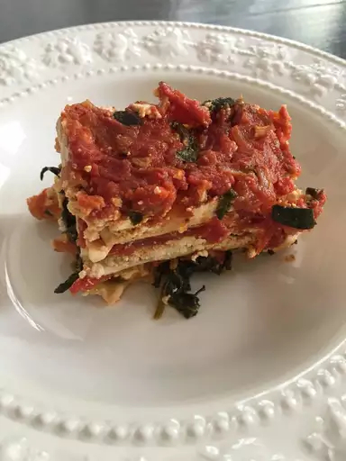

Lasagna

Description
- 2 tablespoons olive oil
- 1 ½ cups chopped onion
- 3 tablespoons minced garlic
- 4 (14.5 ounce) cans stewed tomatoes
- ⅓ cup tomato paste
- ½ cup chopped fresh basil
- ½ cup chopped parsley
- 1 teaspoon salt
- 1 teaspoon ground black pepper
- 1 (16 ounce) package lasagna noodles
- 2 pounds firm tofu
- 2 tablespoons minced garlic
- ¼ cup chopped fresh basil
- ¼ cup chopped parsley
- ½ teaspoon salt
- ground black pepper to taste
- 3 (10 ounce) packages frozen chopped spinach, thawed and drained